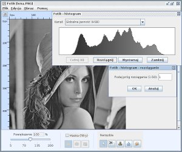
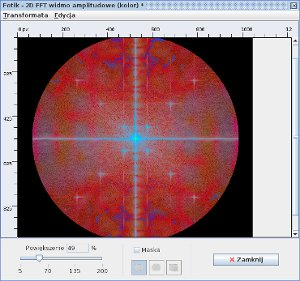

|
Program "Fotik" to przeglądarka zdjęć, uzupełniona o szereg opcji,
które umożliwiają przeciwdziałanie niektórym typowym dla starych fotografii problemom.
|
Operacje I/O i edycja
Możliwy jest odczyt i zapis formatów JPG i PNG.
Program obsługuje cofnięcie do 10 wersji obrazu wstecz) oraz podgląd oryginalnego obrazu.
Podstawowe przekształcenia obrazu:
- Rotacja ( ±90º, 180º ), odbicie pionowe i poziome obrazu.
- Skalowanie (do wyboru 3 rodzaje interpolacji).
Operacje na tonie i kolorze
- Histogram globalnej jasności oraz poszczególnych kanałów RGB z funkcjami rozciągania (z zadanym progiem) i wyrównywania.
- Regulacja jasności i kontrastu obrazu.
- Korekcja gamma dla globalnej jasności oraz poszczególnych kanałów RGB.
- Balans HSB (odcień / nasycenie / jasność).
- Automatyczny balans bieli (wzorowane na algorytmie z programu GIMP)

Filtry
- Grupa filtrów liniowych – splotowych (odszumiające oraz wyostrzające).
- Filtr medianowy.
- Filtr "Smart blur" ("Inteligentne rozmycie" - kopia efektu znanego m.in. z programu Photoshop).
- Adaptacyjny filtr medianowy (możliwość "odwrócenia" wyznaczonych krawędzi, co w pewnych przypadkach pozwala na bardzo efektywne usunięcie rys i zanieczyszczeń). Definiowanie parametrów filtra wyznaczania krawędzi, możliwość podglądu wyznaczonych krawędzi dla danych parametrów.
Narzędzia lokalne
- Warstwa maski – możliwość zaznaczeń prostokątnych i eliptycznych, może posłużyć do przefiltrowania tylko fragmentów obrazu.
- Kadrowanie obrazu.
- Klonowanie (kopiowanie i nakładanie wskazanych fragmentów obrazu).
- Lokalne rozmycie / odszumianie oraz smużenie.
Operacje w dziedzinie częstotliwości
Program umożliwia wyliczenie dwuwymiarowej transformaty Fouriera obrazu (w odcieniach szarości bądź w kolorze), a następnie operowanie na wizualizacji widma:
- Usunięcie częstotliwości odwzorowanych na warstwie maski (podobnie jak w oknie obrazu możliwość wielu zaznaczeń prostokątnych i eliptycznych).
- Automatyczne usuwanie regularnych wzorów (wyszukiwanie na wizualizacji widma punktów przekraczających wskazany próg jasności, poza wskazanym otoczeniem punktu centralnego).
- Filtr dolnoprzepustowy ("idealny")

Wprowadzone w oknie widma zmiany w dziedzinie częstotliwości mogą być następnie wprowadzone do obrazu dzięki zastosowaniu transformacji odwrotnej.